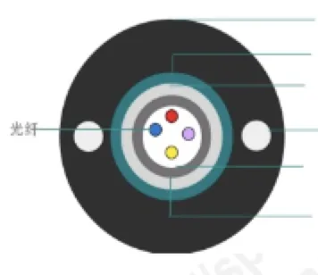
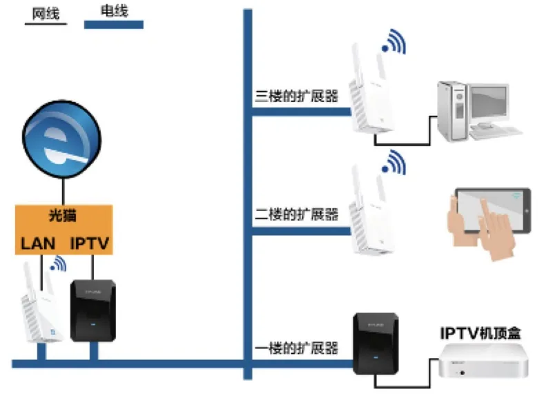
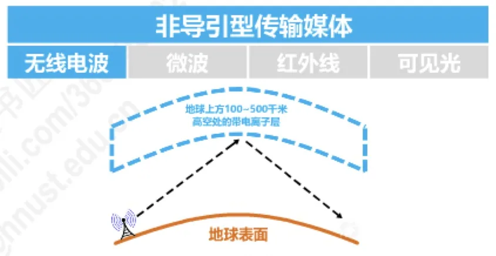
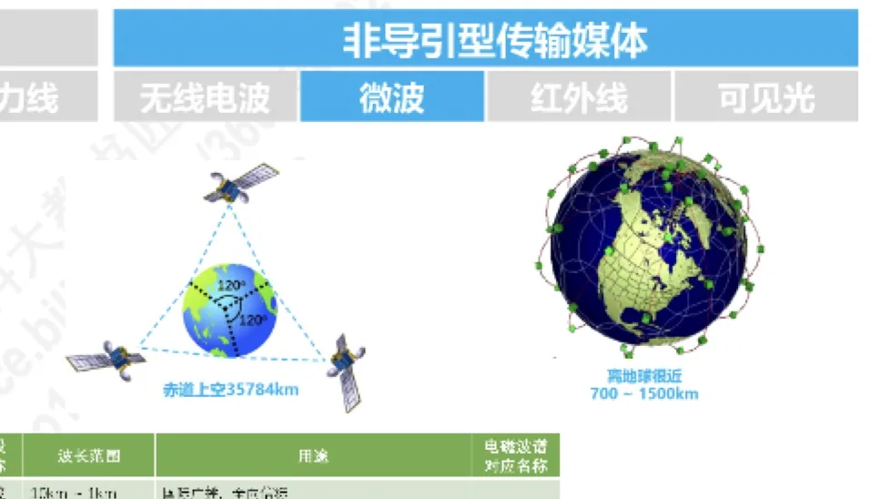

计算机通信与网络 · 第 2 章 物理层
2.2 物理层下面的传输媒体
物理层要在两个相邻结点之间传送比特流，就得有承载信号的物理通路，这条通路就是传输媒体。信号走什么媒体，直接决定了带宽、传输距离、抗干扰能力和造价，所以它是物理层设计时首先要做的选择。本节按「信号是否被约束在物理通路里」把传输媒体分成导引型（有线）与非导引型（无线）两大类，逐个分析它们的结构、原理、优缺点和典型应用。
1. 传输媒体的两大类
传输媒体位于物理层下面，本身并不属于任何一层协议，但它是物理层实现比特传输的物质基础。按照信号是否沿着固体媒体传播，可以分成两类：
- 导引型传输媒体（有线）：信号沿着固体媒体（铜线、光纤等）传播。常见的有同轴电缆、双绞线、光纤，以及把现有电力线用作数据通路的电力线。
- 非导引型传输媒体（无线）：信号在自由空间（空气、真空）中传播。常见的有无线电波、微波、红外线，以及尚在探索中的可见光。
下面先看四种导引型媒体，再看非导引型的电磁波谱与几种无线传输方式。
2. 同轴电缆
同轴电缆由内导体（铜芯）、绝缘层、屏蔽层和绝缘保护套层四部分构成，内导体与外层屏蔽层共用同一条轴线，故得此名。屏蔽层既作为信号回路，又能抵御外界的电磁干扰。按照用途和特性，它可以分成两类：
- 基带同轴电缆（特性阻抗 50 Ω）：用于数字传输，过去在局域网中使用；
- 宽带同轴电缆（特性阻抗 75 Ω）：用于模拟传输，目前主要供有线电视使用。
同轴电缆的主要问题是价格较贵、布线和连接不够灵活方便。随着集线器的出现，局域网领域基本上都改用双绞线作为传输媒体了。
3. 双绞线
双绞线由两根相互绝缘的铜导线按一定密度绞合而成，是最古老、也最常用的一种传输媒体。绞合这件看似简单的工艺有两层作用：抵御部分来自外界的电磁波干扰，同时减少相邻导线之间的电磁干扰。
按有无屏蔽层，双绞线分为无屏蔽双绞线 UTP（Unshielded Twisted Pair）和屏蔽双绞线 STP（Shielded Twisted Pair）。UTP 电缆里通常有 4 对导线，每对用不同颜色区分并分别绞合，例如蓝和蓝白绞合、橙和橙白绞合、绿和绿白绞合、棕和棕白绞合。STP 在每对线外或整条电缆外增加了屏蔽层，抗干扰能力更强，但价格更高、安装更麻烦。
双绞线的性能差别很大，工程上按「绞合线类别」来选用：
| 绞合线类别 | 带宽 | 线缆特点 | 典型应用 |
|---|---|---|---|
| 3 类 | 16 MHz | 2 对 4 芯双绞线 | 模拟电话；曾用于传统以太网（10 Mbit/s） |
| 4 类 | 20 MHz | 4 对 8 芯双绞线 | 曾用于令牌环局域网 |
| 5 类 | 100 MHz | 与 4 类相比增加了绞合度 | 传输速率不超过 100 Mbit/s 的应用 |
| 超 5 类 | 125 MHz | 与 5 类相比衰减更小 | 传输速率不超过 1 Gbit/s 的应用 |
| 6 类 | 250 MHz | 与 5 类相比改善了串扰等性能 | 传输速率高于 1 Gbit/s 的应用 |
| 7 类 | 600 MHz | 使用屏蔽双绞线 | 传输速率高于 10 Gbit/s 的应用 |
可见，类别越高，绞合越密、带宽越大、对串扰和衰减的抑制越好，能支持的速率也越高。第 3 章讲以太网时还会用到这些类别——例如 100 Mbit/s 的快速以太网就跑在 5 类 UTP 上。
4. 光纤
光纤（光缆）利用光脉冲在玻璃纤维中的传播来传送数据。它的基本结构是：中间的纤芯由非常透明的石英玻璃拉成细丝（直径 8~100 微米），外面包裹一层折射率比纤芯低的包层（直径 125 微米），再往外是涂覆层与护套。实际工程中把若干根纤芯连同加强件、阻水带、松管套、轧纹钢带和 PE 护套封装成光缆，例如室外四芯光缆。

（1）光在纤芯中为什么能一直传输
关键在于全反射：当光从高折射率的媒体（纤芯）射向低折射率的媒体（包层）时，折射角大于入射角；如果入射角足够大，光就不会折射出去，而是碰到包层后全部反射回纤芯。于是光在纤芯中不断全反射，像在管道里「弹跳」着前进。发送端用发光二极管或半导体激光器做光源，接收端用光电二极管或激光检波器把光信号还原成电信号。
光缆的工作波长通常选在 0.85 微米、1.30 微米或 1.55 微米，其中 0.85 微米衰减较大，1.30 微米和 1.55 微米衰减较小。
（2）多模光纤与单模光纤
按光在纤芯中的传播方式，光纤分为多模和单模两种，它们的差别直接决定了各自的使用场合：
- 多模光纤：纤芯较粗（50 微米或 62.5 微米），光以多条路径、不断全反射的方式前进。由于色散（模式色散、材料色散、波导色散），光传输一定距离后必然产生脉冲展宽，造成信号失真，因此只适合近距离传输（例如建筑物内）。发送光源用发光二极管，接收检测用光电二极管。
- 单模光纤：纤芯很细（9 微米），光一直向前传播而不发生全反射。它没有模式色散，且在 1.31 微米波长附近材料色散与波导色散大小相等、符号相反，正好相互抵消。单模光纤适合长距离传输且衰减小，但制造成本高、对光源要求高（用激光发生器与激光检波器）。
（3）光纤的优点与缺点
光纤之所以成为现代骨干网的首选，是因为它的优点非常突出：
- 通信容量大：可用带宽达 25000~30000 GHz；
- 传输损耗小，远距离传输时更加经济；
- 抗雷电和电磁干扰性能好，在大电流脉冲干扰的环境下尤为重要；
- 无串音干扰，保密性好，不易被窃听；
- 体积小、重量轻。
缺点主要有两条：光缆割接需要专用设备；光电接口的价格较贵。
5. 电力线
电力线本来只是输送电能的线路，但由于它遍布千家万户，人们很自然地想到把数据信号调制到电力线上传输，这就是电力线通信。家庭中常见的用法是：光猫（或路由器）一侧接网络，另一侧接电力线适配器，数据沿家里的电线传到其他房间的适配器，再为 IPTV 机顶盒、电脑等设备提供网络接入，各楼层之间还可以用扩展器接力。

它的好处是不必重新布线，插上插座就能联网；代价是电力线信道噪声大、时变性强，速率和稳定性都不如专用的双绞线或光纤。
6. 非导引型传输媒体与电磁波频谱
无线传输靠的是电磁波。电磁波的频率 f、波长 λ 与传播速度 c 满足 λ = c / f（c 为光速），频率越高波长越短。把电磁波按频率排列，就得到电信领域使用的电磁波频谱：低频端是无线电波，往上是微波、红外、可见光、紫外、X 射线、γ 射线。国际电信联盟 ITU 把无线电波划分成若干波段并编号，每种波段有对应的名称、频率范围、波长范围和典型用途。

不同波段的传播特点差别很大，这决定了它们的用途：
- 低频段（LF 低频、MF 中频，即长波、中波）：沿地球表面以地面波方式传播，可传送较远距离，常用于国际广播、导航信标、调幅（AM）广播和海事通信。频率再低的极低频、超低频、特低频、甚低频（ELF~VLF）难以产生和调制，主要用于潜艇通信或直接转换成声音。
- 高频段（HF 高频、VHF 甚高频，即短波、米波）：可以穿透高空带电离子层，靠电离层反射以天波方式传播到很远的地方，常用于国际广播、航空通信、业余无线电，以及调频（FM）广播和电视广播。
- 超高频及以上（UHF 特高频、SHF 超高频、EHF 极高频，即分米波、厘米波、毫米波）：穿透建筑物能力弱、绕射能力差，但可用带宽大，用于电视广播、无线网络、卫星通信、雷达、射电天文学和人体安检仪等。
再往上的红外、可见光、紫外等频段，或者很难产生和调制，或者穿透能力很弱、对生物有害，通常不作为电信传输手段使用。为了避免互相干扰，无线电频谱由专门机构管理：我国是工业和信息化部无线电管理局（国家无线电办公室），美国是联邦通信委员会 FCC。其中有一段ISM 频段（Industrial, Scientific, Medical，工业、科学、医疗频段）开放免许可使用，无线局域网就工作在其中的 2.4 GHz 和 5.8 GHz 附近。
7. 几种无线传输方式
在非导引型传输媒体中，实际用于通信的主要是无线电波、微波和红外线。
（1）无线电波
无线电波频段宽、绕射能力强，可以覆盖很广的区域，适合广播类业务和移动通信。它的频段划分与传播方式如上所述：中低频靠地波，高频靠天波，特高频以上则主要靠视距传播。
（2）微波
微波一般指 300 MHz~300 GHz 的电磁波，它沿直线传播，遇到障碍物会被阻挡，因此主要采用视距 LOS（Line of Sight）传播，两个地面站之间的通信距离一般在 50~100 km 左右，更远就需要用中继站接力。要实现远距离、大范围的覆盖，可以采用卫星中继：把微波站放到卫星上，一颗在赤道上空约 35784 km 的地球同步卫星，其转发器就能覆盖地球表面约三分之一的区域；离地球较近的 700~1500 km 轨道则用于低轨卫星通信，此时卫星相对于地面快速移动，需要用多颗卫星组网。

微波通信的优点是频带宽、通信容量大，且不需要铺设线路；缺点是相邻站之间必须直视、受天气影响较大、保密性较差、隐蔽性和抗破坏性也不理想。
（3）红外线
红外通信也用直线传输，属于点对点无线传输：中间不能有障碍物，传输距离短，速率也不高（约 4 Mbit/s~16 Mbit/s）。它过去常用于遥控器、早期的 IrDA 设备等，在如今的互联网时代已基本被淘汰。
（4）可见光
可见光频段资源极为丰富，理论上可用于通信（例如利用 LED 照明灯同时照明和传输数据的 LiFi），但目前还处在研究探索阶段，尚未大规模实用。
本节小结
- 传输媒体位于物理层下面，按信号是否被约束在物理通路中分为导引型（同轴电缆、双绞线、光纤、电力线）与非导引型（无线电波、微波、红外线、可见光）；
- 同轴电缆分 50 Ω 的基带同轴电缆（数字传输，过去用于局域网）与 75 Ω 的宽带同轴电缆（模拟传输，现用于有线电视），因价格贵、布线不便，局域网已让位于双绞线；
- 双绞线靠绞合抵御外界干扰并减少相邻导线间的串扰，分 UTP 与 STP；类别越高带宽越大（3 类 16 MHz 起，到 7 类 600 MHz），支持的速率也越高；
- 光纤利用纤芯与包层的折射率差形成全反射来导光：多模光纤有色散、脉冲展宽，只适合近距离；单模光纤无模式色散，适合长距离、衰减小；优点是容量大、损耗小、抗电磁干扰、保密好、体积小，缺点是割接需专用设备、光电接口较贵；
- 非导引型媒体依靠电磁波频谱中的各个波段：低频段以地波传播、高频段以天波传播、微波以视距和卫星中继传播，红外线已淘汰，可见光尚在探索；无线电频谱由专门机构管理（我国为工业和信息化部无线电管理局）。